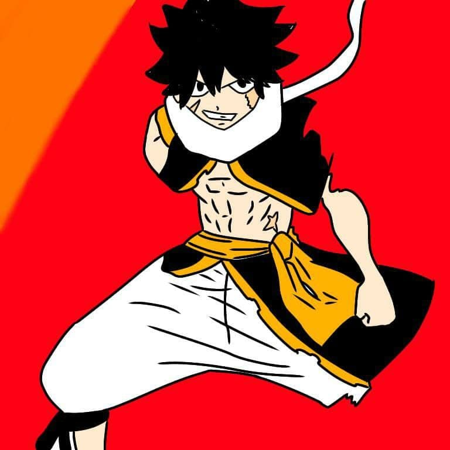

the legend manga
Search

Join in the server e aiutaci a creare questo progetto
server discordstoria
PRIMA GUERRA
Dragonear, chiamato anche THE FIRST, creò 6 figli e diede loro l'incarico di creare nuove forme di vita e di governarle. Ovvero ognuno dei 6 figli creò una determinata razza. The First, dopo molto tempo dalla creazione dei suoi 6 figli, per noia, ma non solo, fece scoppiare una grande guerra che in seguito venne chiamata Guerra dell'universo Dragonear. (Nelle prime tre saghe si conosceranno i villain e si metteranno le radici per la seconda guerra. )
SECONDA GUERRA
Passati alcuni millenni dalla prima guerra e dopo che il popolo dei Flemist si sviluppò, King Flemist tentò e convinse The Second di far fuori suo padre spiegandogli la verita, The second insieme ad Haward conosciuto come l'uomo più intelligente vissuto fino a quel momento, the Second gli chiese una mano nella battaglia tra il popolo dei draghi e quello dei Flemist per battere il male assoluto ossia Dragoner stesso secondo loro. The second mentre i Flemist si preparano per la guerra raccolse informazioni sul suo popolo per vincere la guerra facilmente. La guerra fu spietata entrambi i fronti non volevano cedere molti draghi e Flemist morirono. king Flemist per salvare il suo popolo e dimostrare il suo enorme potere decise di affrontare i vari draghi generali riuscendo a tenergli testa e ad eliminarne molti. Passato qualche anno the firstè the king Flemist si sfidarono nella loro prima battaglia the King Flemist ne uscì sconfitto sviluppando un odio ancora più grande per i draghi e specialmente per dragoner, qualche giorno dopo dalla lotta Haward vide suo figlio morire per mano di Imperator e il suo odio si manifestò tramando nell’ombra. Alla fine the First the Second si affrontarono in uno scontro leggendario dove the second ne uscì sconfitto ma riuscì a scappare e giurò di cambiare il mondo che suo padre creò e Haward si finse alleato di the First per sconfiggerlo usando il suo stesso potere infatti gli consiglio di avere un contenitore per la propria forza e così nacquero i vari portatori di the first.
terza guerra ( prima guerra dragonica)
Dopo molti anni dalla leggendaria guerra tra draghi e flemist The End dragon altro figlio di Dragoner anche lui colpito dagli ideali del fratello decise dopo molte riflessioni di seguire le orme del fratello e vendicarlo battendo loro padre. The Second ancora vivo nonostante la 2 guerra saputo del piano del suo fratello minore decise di aiutarlo per battere loro padre una volta per tutte. nel mentre Dragoner incontrò la seconda portatrice ed in seguito gli altri possessori che lo aiuteranno a sconfiggere ma in parte i suoi 2 figli grazie anche all’aiuto di tutti i suoi figli (4).
Seconda guerra Draconica
THE SECOND e THE END verranno sconfitti e sigillati all'interno di due oggetti dentro due grotte. In seguito Dragoner insieme ad Haward iniziarono a costruire i vari oggetti leggendari.
Prima Saga
Le vicende si ambienteranno nel 2018 a Bolzano, in una giornata soleggiata dopo aver finito la scuola in nostro protagonista tornando verso casa incontra uno strano individuo e deciderà di aiutarlo ma lo strano individuo teletrasporta il nostro protagonista in uno strano luogo, il nostro protagonista noterà 3 oggetti incastonati in questa grotta che possiede molte incisioni all’inizio non importanti ma in realtà sono molto importanti e senza esitare provò a tirare fuori i 3 oggetti ritrovandosi in questo strano mondo all'apparenza magic ma in realtà intriso di nemici. Gli oggetti si presenteranno al protagonista e gli spiegheranno quello che sta succedendo ma in realtà ne loro ne gli abitanti si fidano del protagonista infatti per potersi fidare gli danno una missione ovvero sconfiggere le armate del re demone. Il nostro protagonista dovrà andare nei vari modi( naruto, one piece, miraculous ecc) dopo qualche mese passati a sconfiggere il re demone scenderà in campo e con un colpo di energia attacco i tre oggetti ma il nostro protagonista si mise e mezzo per salvandoli affermando che stava iniziando a tenere a loro e insieme sfidano il re demone battendolo e guadagnandosi la fiducia di tutti da qui inizia il cammino del nostro protagonista.
Seconda Saga Primo arco narrativo
Vedremo che il nostro personaggio principale si affronterà con vari villain(anche importanti). Secondo arco narrativo Andremo a scoprire nuovi utilizzi sugli oggetti e variazioni della storia sul punto di vista del nostro personaggio principale. Terzo arco narrativo Introduzione di uno dei 6 figli di Dragoner, andremo a scoprire anche l'identità di un professore che si rivelerà importante per la storia.
Terza Saga Primo arco narrativo
Dopo la battaglia con haward e suo figlio gli OLvennero distrutti quindi il protagonista grazie alle loro parole riuscì a ripararli modificando il design. Dopo qualche mese di calma il nostro protagonista fu costretto ad affrontare molte lotte con la scuola, la sua vita, con nuovi nemici tra cui THE SECOND e THE END riuscendo ma per un pelo a batterli, inoltre incontro gli ultimi suoi altereghi e nuovi ol. Dopo tutto questo andò nel mondo di fairy tail e dopo qualche tempo lui e lucy iniziarono a conoscervi e si misero insieme e dopo di lei conobbe wendy, mavis,zera, anna , erza , charle ed infine hisui e si misero insieme .Passato un anno avvennero molti cambiamenti mouad conobbe e venne a sapere delle prime 2 guerre e sblocco la crimson form ma anche altre forme. Nella parte finale riuscì a riunirsi a 4 dei 6 figli di Dragoner e subito dopo incontrò dragoner diventato suo contenitore, ma avendo dei dubbi su di loro riuscendo a superarli e li considerò come una vera famiglia.
4 SAGA
Dopo alcune battaglie il nostro protagonista incontrerà un nemico particolare che lo batterà ma adesso scoprirà delle informazioni molto importanti. Incontrerà nuovi alleati insieme ad ‘essi un torneo che verrà interrotto da un nemico misterioso che dopo si scoprirà essere il backup per il ritorno di haward, prima di morire haward diede al protagonista un file con i dati dei vari nemici che affronterà il protagonista. Passato del tempo il nostro protagonista avrà dei momenti con dragoner per diventare lui stesso il nuovo dragoner ma rifiuto, incontrerà il king flemist ed i suoi sgherri alcuni di loro riuscirà a convincerli e fargli passare dalla sua parte dopo lunghe battaglie e ben 2 round contro the king flemist. Subito dopo incontrerà 2 nuovi nemici e dopo averli battuti non in battaglia ma come ideali viaggiò indietro e incontro i vari suoi predecessori, dopo di che incontrerà il vero creatore degli oggetti leggendari e ne conoscerà i prototipi tutto questo porterà alla morte di Dragoner e degli oggetti che affidano al protagonista il loro potere ed una grande responsabilità.
5 SAGA
Dopo la morte di Dragoner ecc il nostro protagonista avrà una crisi che lo porterà pian piano a dubitare di tutto e il mondo reale scoprì l’esistenza dei poteri creando un corpo di guardia e inseguito tutto il mondo li ottenne ciò comportò numerose morti tra cui makarov. Dopo incontrò degli strani figuri legati ad haward dopo numerose sfide il nostro protagonista scopri nuove verità sul suo passato portandolo a lasciare i suoi amici per ben 1 anno.
6 SAGA
nel mentre il nostro protagonista accaddero molti cambiamenti che vedremo nel corso della storia, scopriremo nuove informazioni e nuovi nemici legati la lotta tra draghi e flemist e scopriremo il vero piano di Dragoner. Inseguito il team protagonista decise di viaggiare e nel loro viaggio incontreranno nuovi popoli collegati ai ricordi del protagonista ed a Dragoner e i suoi figli e si scoprirà l’esistenza di un nuovo figlio. Nella battaglia finale morirà un membro importante del main team e il nostro protagonista sarà costretto a combattere contro i suoi amici.
personaggi
Protagonista: poteri
Dragon flame
Poteri totali del protagonista
- Demonn flame : Quando dragoner si fuse con lui una minima parte del suo potere venne passato indirettamente a mouad grazie a questo può usare la dragpn flame form ovvero fiamme blu bianche che in seguito si scoprirà essere il potere di THE IMPERATOR e glielo restituì ottenendo un’altra forma ovvero una delle 6 forme più forte in suo possesso
- Energia spirituale e poteri alieni: Dopo aver perso la dragon flame riuscì ad usare la sua energia spirituale per combattere creando nuove tecniche. Dopo 1 mese da questo avvenimento la scuola riuscì ad avere il permesso di studiare una forma di vita aliena, che si unirà a lui per poi essere assorbita dalla forma scp ma gli domò la superforza pari a 10 volte quella di spider man, velocità al livello del suono, resistenza, sensi sviluppati al massimo e la possibilità di vedere il futuro ma quest’ultima la perderà.
- occhi dei 7 mari
- potere dei 5 draghi elementali fuoco, fulmine, vento, acqua, ombra e luce li userà per poco per poi cambiarli per via del fatto che il suo corpo non riuscì a gestire il potere di 5 draghi.
- Green dragon power( ma solo alcune mosse non tutto il potere)
- poteri di vari villain Userà per poco i poteri di vari villain dopo averli battuti e assorbiti
- Guns magic
- Grade
- Userà la sua vera forma accettando finalmente il suo vero io
| Nome | Abilità |
| nene yakura | tengu: katane infernali possiede delle doppie katane che rilasciano potenti fiamme solo tagliando il corpo dell'avversario bruciandolo da dentro |
nene ragazza della night raid che é ricercata per l' uccisione di una delle famiglie nobili più importanti del paese. Lei faceva parte di quella famiglia che ha sterminato dopo l'incontro con la neo night raid che gli ha raccontato tutte le azioni illegali che la famiglia conduceva per prendere il potere del paese.
| Nome | Abilità |
| Asaku: Izuku | Quirk: Evocatore di spade Spada (Oscura) Spada(Della luce) |
Asaku nasce in una isolata al Nord-Ovest, Una isoletta dove sono stati fatti esperimenti sui demoni soprattuto il capo espiatorio era proprio la famiglia di Asaku. Il primo esperimento fatto su una persona è stato proprio Asaku che fu rinominato come esperimento 001, fa qualcosa è andato storto protpio per questo Asaku usci fuori di testa e uccise tutta la sua famiglia. Cosi dopo che fu ritrovato senza sensi dentro casa sua ricoperto di sangue, fu esiliato dalla sua gente, e fu mandato in una isola remonata dove li catterizo il suo potere, cosi si alleno per controllare il suo potere e diventare sempre più forte. Il suo potere è ancora sconosciuto al livello di potenza, ma si sa i demoni vogliono sempre qualcosa in cambio, come può essere l' anima come potrebbe essere una parte del suo corpo o addirittura i suo giorni di vita. Carattere: Vivace, impulsivo, timido, coraggioso, allegro, testardo Età: 18 anni Compleanno: 23 luglio Data di nascita: 23/07/2003 obbi: correre, giocare e ascoltare musica cosa gli piaace: Disegnare, mangiare, dormire e scherzare